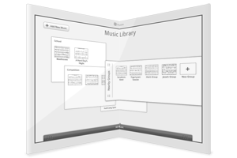
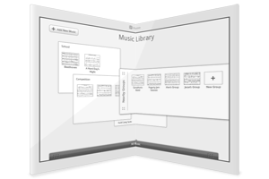
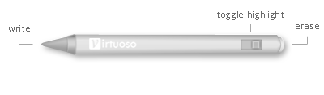

Your music collection, the way you want it
- Drag and drop to arrange your music library
- Music playback on any song
- Shop the Virtuoso store wirelessly right from your device
- Synced notetaking across multiple Virtuoso devices
- Built in metronome, tuner
The newest color E Ink display technology
- High Contrast E Ink Triton display is readable in all lighting conditions
- Folds in half for easy storage
- Low power usage means up to 2 months of battery life
- Lightweight, only .8 oz
- Comes in Onyx Black or Ivory White
 

Virtuoso SmartPen™
The Virtuoso SmartPen™ is the easy way to mark your music. Tapping the page with your finger usually plays back music, but writing on the page using the pen makes markings. Using the tip of the pen writes notes and using the eraser end erases notes. You can switch between writing and highlighting by using the toggle on the pen. When playing with multiple Virtuoso devices, musicians can synchronize their music, so notations made on one device copy themselves to the right spot on everyone's page, making collaboration simple.

Musicians speak out
I play piano, and page turning is a breeze now that I have Virtuoso.
- Eunhyo, Concert Pianist
I play outdoor weddings and I don't have to worry about pages blowing away in the wind.
- Sol, University of Oregon Trumpet Student
I carry a lot of music, and this lightens the load I have to bring with me everyday.
- Steven, High School Alto